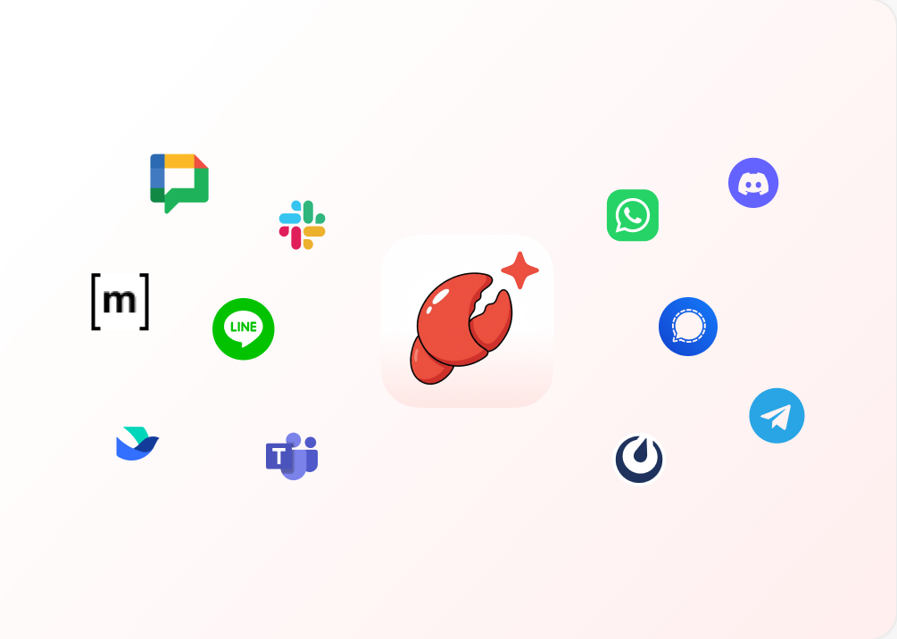

Genspark 用了三个月，踩过的五个坑给你打个预防针
从云电脑订阅到 OAuth 授权、从 Claw 本地执行到 Deep Research 指令，五个真实踩坑案例对应解法，帮你避开 Genspark 里最容易浪费时间和钱的地方。
说真的，Genspark 看着不像一个会坑人的软件——界面干干净净，从官网拉出来的功能清单全是 AI 时代的刚需：云端智能体、本地 Claw 客户端、邮件日历自动管家、Deep Research 调研……注册完就想直接往生产环境上挂。
但我用了三个月，中间不是没出过事。有些坑是产品设计上故意不摆在台面上的——比如成本结构；有些是功能描述写了但新手不会留心的——比如数据回收；还有一些纯粹是我自己想得太简单。今天把这些逐个摊开，你看完至少能少花一周试错。
坑一：以为买了会员就能跑 Claw，结果发现是三笔独立账单
症状：我先开了 Plus 会员，兴冲冲按提示去下载好 Claw 客户端，连上账号点启动——界面一直卡「初始化执行环境」，等了快十分钟，弹出一行提示说「缺少云电脑订阅」。当时以为是 bug，重启卸载重装折腾了半小时，最后去Genspark文档查才明白。
原因：Genspark 的成本结构是三条线完全独立的：Plus/Pro 会员是 AI 模型的访问权限，云电脑是 Claw 背后承载执行环境的那台机器，积分是智能体每一次实际操作烧掉的额度。云电脑三档配置（Lite / Standard / Powerful）各有各的月费，积分虽然和会员共享池，但用完了还是要额外买。我当时只算了会员费，没算云电脑那一笔，结果 Claw 空转——它根本没有本地执行的能力，所有替我操作电脑的活都要先在云端虚拟机里跑一遍再把结果同步下来。

解法：如果你不确定自己会不会真的高频用 Claw，别一上来就拍板 Powerful 档。Lite 档（2 vCPU / 4 GB / 64 GB）足够轻任务挂着跑，不够再升。另外记住一件事——取消云电脑订阅后，云端虚拟机里的所有数据永久删除，没有回收站也没有恢复入口。我帮朋友整理过一次他误取消后的云盘，里面存的本地备份全没了。取消前一定手动导出你在云电脑上跑出来的任何东西。
坑二：AI 秘书 OAuth 授权给了全家桶，忘了撤回三个月
症状：Genspark 升级「AI 秘书」之后，我在一个周末无聊的时候把 Gmail、Google 日历、Google Drive 三个套件全授权了，想试试让它帮我晨间简报。试了一周觉得还行，但后来没续用，就把这事给忘了。直到三个月后检查 Google 账号的授权列表时才发现——Genspark 还挂在那，而且它申请的不是「只读」权限，是「读写+发送邮件+管理日历条目」。
原因：OAuth 授权默认是长期生效的，Genspark 在授权时会把多个套件的权限合并成一个大请求。你点一次同意，相当于给它开了三年期的家门钥匙，而且钥匙上的权限范围比你单次使用实际需要的要大得多。个人用户不像企业版那样有统一的连接器治理，全靠自己记得回去撤。
解法：授权时用最小权限原则。第一次用 AI 秘书只开「读邮件+创建日历条目」，别同时勾「发送邮件」和「管理驱动器」。另外养成每月一次检查 Google 账号安全中心的习惯，把不常用的授权撤回。如果你把 Gmail 全托管给它，至少先给自己设一个规则——发送邮件前必须给你过目草稿，不能让它直接代发。这个审批点在委托里一句话就能加，但很多人忘了。
坑三：Deep Research 指令写得太宽，跑了三十轮出来一份空泛报告
症状：让 Genspark 帮我做「跨境电商物流」调研，想着关键词大一点覆盖全。结果跑了快十分钟，出来一份报告，前三页全是「跨境电商物流是一个快速增长的领域」这种正确但没用的话，关键的时效对比和成本差异一条都没说清。我以为是模型能力不够，换了不同模型重跑，结果还是一样。
原因：Deep Research 本质上是多轮检索+交叉比对+结构化组织的流水线，你的指令决定了检索的范围和产出的骨架。我那句「跨境电商物流」等于没给任何框——它不知道要比什么、比哪些方案、时间范围是什么、给谁看。三十轮检索里有二十轮在找定义和综述，真正的对比数据只占了几轮。官方文档里明确提到过，调研类指令必须「框住范围」，但示例写在帮助中心深处，没人会主动翻。
解法：把大问题拆成可以直接跑的小问题。比如把「跨境电商物流」改成「比较 2026 年中美线小包的三种主流物流方案（ePacket / 燕文 / 专线）在时效（均值与 P90）、单件成本、丢包率三个维度上的差异」——这一版指令直接告诉它要比什么、比谁、在哪找数据。另外记得显式要求引用：每条关键结论附来源 URL，你抽查的时候不至于对着一堆数字瞎猜。中途觉得方向不对可以插话调整，但注意已经完成的检索轮次不会因为你改指令就重来——要改尽早改。
坑四：选了 Super Agent 云端版却想让它摸我本地文件
症状：某天让 Genspark 帮我整理下载文件夹，它在云端跑了十分钟，最后回来一句「我找不到你的下载文件夹」。我当时心想：AI 智能体连我电脑上的文件夹都找不到，这算哪门子智能体？后来才搞清楚，是我选错了执行层。
原因：Super Agent（云端）和 Claw（本地客户端）是两套完全不同的执行环境。云端版的智能体只能碰网页和云端存储（Google Drive、Notion 这些通过 API 授权的），它没有任何办法访问你本机的文件系统、浏览器历史、安装的应用。我那个整理下载文件夹的需求，本质上需要摸到我电脑上的真实文件，这只有 Claw 能做。Claw 才是真正嵌进你本地环境里的那一个，Super Agent 更像是远程的研究助理。
解法：任务先分个类。需要摸本机的——整理本地文件、在自己浏览器里走完一套登录流程、操作本地装的某个软件——直接用 Claw。纯云端的——查网页、汇总 Google Drive 文档、给 Notion 写条目、Deep Research 调研报告——用 Super Agent 就够了，没必要浪费一笔云电脑订阅费。我见过不止一个朋友同时开着云电脑和 Pro 会员，结果用了三个月发现 Claw 一次没开，全在云端派活，白花了。
坑五：以为数据是自己的，其实全在云端和云电脑上
症状：上个月换工作换电脑，想把 Genspark 上积累了两个月的委托记录和 Claw 跑出来的中间文件搬走。委托记录倒是能在界面上一条条复制，但 Claw 在云电脑上生成的那些临时脚本和日志——全随云电脑订阅绑在 Genspark 的机器上，没有批量导出，只能云电脑还在的时候手动下载。我当时差点取消云电脑省一笔，幸亏提前想起这茬，不然两个月的工作痕迹直接清零。
原因：Genspark 的产品设计里，云电脑上的文件属于云电脑，不属于你。订阅在，文件在；订阅没了，文件被回收。这和你自己本地硬盘上的东西性质完全不同。委托记录虽然在账号侧，但界面上只有单条导出，没有批量打包——两个月写了快五十条委托，一条条复制到吐。
解法：养成两条纪律。第一，云电脑里的重要产出（脚本、日志、中间报告）每周手动存一份回自己的本地硬盘或网盘。别把 Genspark 当备份工具用，它是执行环境。第二，委托记录里的长期有效提示词（比如你让 AI 秘书每天晨间简报的那段指令），单独存一份本地笔记，别指望界面能帮你记住。
防坑清单速查
- 成本按三笔算：会员费 + 云电脑费 + 积分消耗，别只看会员一个数字
- OAuth 授权先撤再加：每月检查一次 Google 账号安全中心，撤回没用的授权
- Deep Research 指令要细：框住要比什么、比谁、时间范围，显式要求引用
- Super Agent vs Claw 分清楚：摸本机用 Claw，纯云端用 Super Agent
- 云电脑取消前必备份：所有本地生成的重要文件先存回自己硬盘
写完这篇回头看，Genspark 其实没那么难用——坑大多是「产品不说、新手不会猜」的设计盲点。上面这些整理参考了社区里攒的一份中文资料，GitHub、Gitee、GitCode 都有人同步维护，哪个你顺手就看哪个。知道这些地方会绊人，提前留意，这软件其实相当省心。